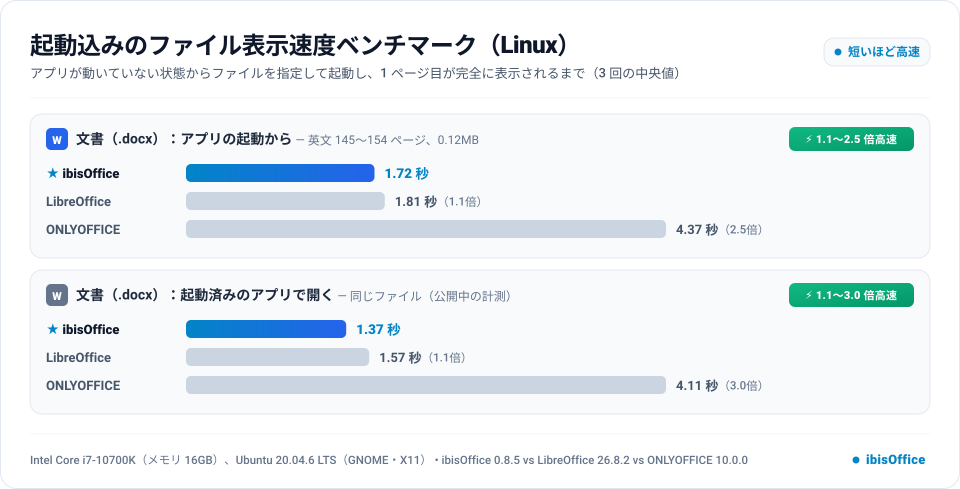
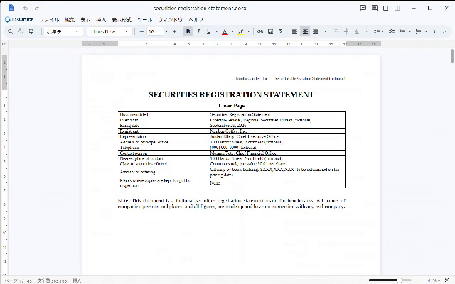
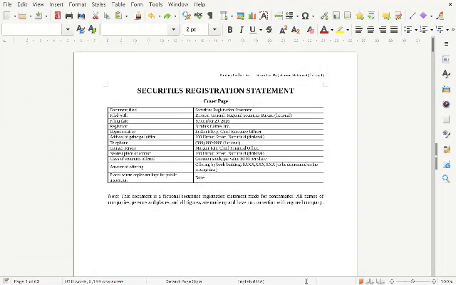
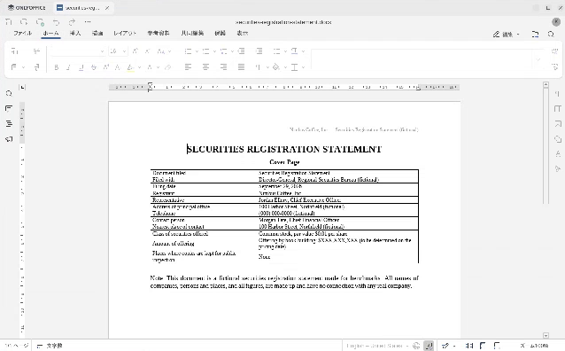

起動込みのファイル表示速度（.docx）
ibisOffice 0.8.5・LibreOffice 26.8.2・ONLYOFFICE 10.0.0。アプリが動いていない状態から、ファイルを指定してアプリを起動し、1 ページ目が完全に表示されるまでの時間を、公開中の「起動済みのアプリで開く」計測と比べました。各 3 回の中央値。Linux の同じ PC・同じ計り方（Intel Core i7-10700K（メモリ 16GB）、Ubuntu 20.04.6 LTS（GNOME・X11））。
結論：倍率は「起動済みのアプリで開く」（今の計測）のほうが大きく、マーケティングにはそちらが有利です。
- LibreOffice との差：「開く」だけ 1.14 倍 → 起動込み 1.05 倍。ONLYOFFICE との差：3.00 倍 → 2.55 倍。どちらも、起動を含めると倍率が下がりました。
- 理由：起動の時間はどのアプリにも上乗せされ（下の表で +0.24〜+0.34 秒）、しかも ibisOffice の上乗せ（+0.34 秒）が一番大きいためです。ibisOffice は窓が出るまでに約 0.47 秒かかり（AppImage の展開を含む）、LibreOffice（0.22 秒）・ONLYOFFICE（0.31 秒）より遅れて窓を出します。
- 同じ足し算になるので、pptx・xlsx・CSV でも起動込みにすると倍率は下がる見込みです（ibisOffice が速いほど、同じくらいの起動時間を足したときの倍率の下がり方は大きい）。
グラフ

結果
| 計り方 | ibisOffice | LibreOffice | ONLYOFFICE |
|---|---|---|---|
| アプリの起動から（起動込み） | 1.72 秒 3 回：1.70 / 1.79 / 1.72 窓が出るまで 0.47 秒 | 1.81 秒（1.05 倍） 3 回：1.81 / 1.81 / 1.82 窓が出るまで 0.22 秒 | 4.37 秒（2.55 倍） 3 回：4.37 / 4.46 / 4.35 窓が出るまで 0.31 秒 |
| 起動済みのアプリで開く（公開中） | 1.37 秒 3 回：1.37 / 1.33 / 1.39 | 1.57 秒（1.14 倍） 3 回：1.53 / 1.57 / 1.59 | 4.11 秒（3.00 倍） 3 回：4.16 / 4.11 / 4.00 |
どちらの倍率が大きいか
| 「開く」だけ | 起動込み | 倍率が大きいほう | |
|---|---|---|---|
| LibreOffice は ibisOffice の何倍かかったか | 1.14 倍 | 1.05 倍 | 「開く」だけ |
| ONLYOFFICE は ibisOffice の何倍かかったか | 3.00 倍 | 2.55 倍 | 「開く」だけ |
起動で増えた時間（起動込み − 「開く」だけ、中央値）：
| アプリ | 「開く」だけ | 起動込み | 増えた時間 |
|---|---|---|---|
| ibisOffice | 1.37 秒 | 1.72 秒 | +0.34 秒 |
| LibreOffice | 1.57 秒 | 1.81 秒 | +0.24 秒 |
| ONLYOFFICE | 4.11 秒 | 4.37 秒 | +0.26 秒 |
起動込みで差を開くには
- ibisOffice の起動（窓が出るまで約 0.47 秒）は、Linux では AppImage の展開（自前のランタイム
crates/ibis-appimage）を含みます。ここが LibreOffice 並み（約 0.2 秒）に縮めば、起動込みでも「開く」だけと同じくらいの倍率になります。 - OS のディスクのキャッシュが空の状態（PC を起動した直後など）では、ファイルの大きいアプリほど起動が遅くなるため、差が開く可能性があります。試しに回した最初の 1 回（3 回の計測とは別、キャッシュが一部空だった可能性がある回）は ibisOffice 1.95 秒・LibreOffice 2.47 秒・ONLYOFFICE 4.89 秒でした（LibreOffice の 1.27 倍）。ただし 1 回だけで、キャッシュを空にする操作（管理者の権限が要る）もしていないので、数字としては使えません。きちんと計るなら、管理者の権限で
drop_cachesしてから計る必要があります。
計り方
scripts/benchmark-linux/bench.pyのlaunch：3 アプリのプロセスがすべて終了した状態から、ibisOffice-0.8.5-Linux.AppImage <ファイル>・soffice <ファイル>・DesktopEditors <ファイル>を実行した時点から計りました。窓が出る場所（各アプリの設定で決まる）を最初から記録し、窓が出る前の背景との違いを含めて、文書の部分の最後の変化を終わりとしました（「開く」の計測と同じ判定）。- LibreOffice は、ほかの計測と同じく
soffice.binを直接起動しています（oosplashを通さない）。この PC では glibc 2.35 のローダーを通して起動しています（report.htmlの「この PC に固有の事情」）。 - 3 回とも続けて計ったので、OS のディスクのキャッシュは温まった状態です（2 回目以降はファイルがメモリにある）。
- 結果：
runs/launch-*-docx-*.json。報告とグラフはscripts/benchmark-linux/report_launch.pyで作りました。
終わりのフレーム（起動込み、中央値の回）


